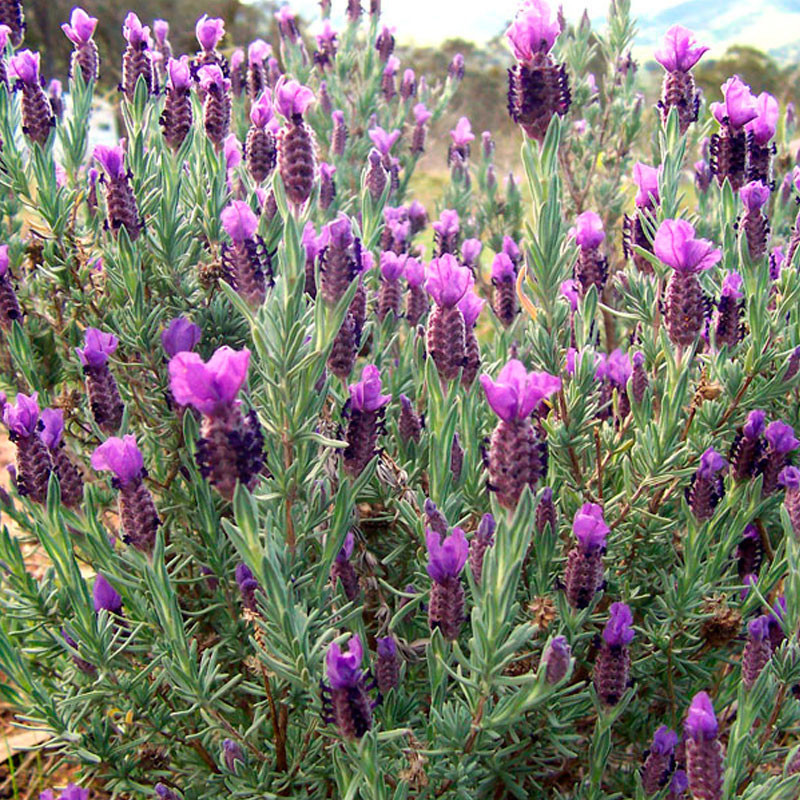

Ayuntamiento de Senés
JARDIN BOTANICO DE ESPECIES AUTOCTONAS DE SENES

Lavandula stoechas

El cantueso (Lavandula stoechas) es un arbusto perenne aromático típico del ecosistema mediterráneo, ampliamente distribuido en zonas secas, soleadas y de suelos pobres o silíceos. Presenta un porte leñoso y muy ramificado, pudiendo alcanzar hasta 1 metro de altura en condiciones favorables.
Sus hojas son estrechas, lineares y persistentes, de color verde grisáceo, lo que le permite reducir la pérdida de agua y adaptarse a climas áridos. Sus flores, generalmente de color violeta intenso con brácteas llamativas en la parte superior, son pequeñas pero muy abundantes y tienen una gran importancia ecológica al atraer a numerosos polinizadores.
El cantueso es una especie característica de la región mediterránea, donde crece de forma natural en zonas secas, soleadas y con escasa humedad. Se adapta especialmente bien a suelos pobres, arenosos o silíceos, siendo muy frecuente en laderas, monte bajo y terrenos abiertos.
El cantueso posee numerosas propiedades beneficiosas ampliamente reconocidas desde la antigüedad. Entre ellas destacan sus efectos relajantes, antisépticos y digestivos. Tradicionalmente se ha utilizado para aliviar el estrés, mejorar el descanso y tratar afecciones leves.
El cantueso ha tenido un fuerte simbolismo a lo largo de la historia en las culturas mediterráneas. Se ha asociado con la limpieza, la calma y la protección. En muchas tradiciones populares, se utilizaba para perfumar ambientes y como símbolo de bienestar.
En Senés, el cantueso ha sido una planta apreciada por los apicultores, los pastores la utilizaban como alimento para sus ganaderías. tambien se destilaba y se utilizaba la esencia para perfumería.
El cantueso puede florecer durante gran parte del año en climas mediterráneos suaves, aunque su periodo principal de floración se concentra entre primavera y comienzos del verano. Sus flores, de tonalidad violeta, aparecen en abundancia y constituyen una importante fuente de néctar para insectos polinizadores, especialmente abejas.
El cantueso es una de las plantas aromáticas más características del paisaje mediterráneo, destacando por sus flores con brácteas superiores que le dan un aspecto muy llamativo. Su nombre ha estado ligado tradicionalmente a su uso en perfumería y medicina natural.
Además, es una planta muy valorada en apicultura, ya que produce una miel aromática de gran calidad. En muchas zonas, también se ha utilizado para elaborar esencias y productos naturales.